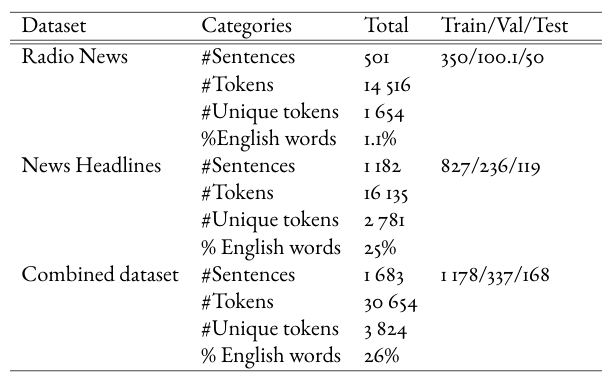
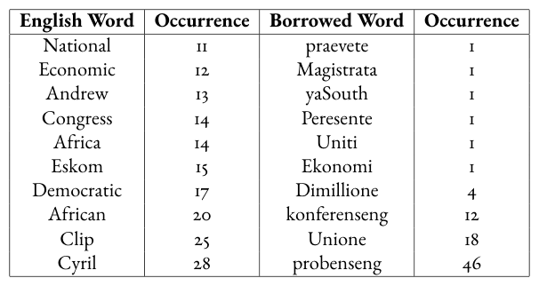
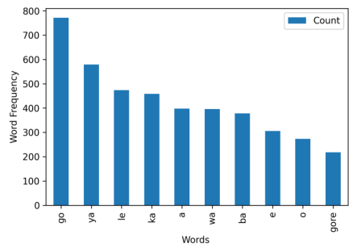
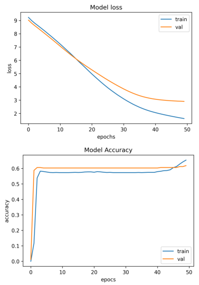

RAIL 2022Traduction automatique
L'analyse du corpus d'informations radiophoniques en code-switching Sepedi-Anglais
Traduction automatique, non relue par un humain. L'article original est la version de référence ; les phrases soulignées sont celles dont les contrôles automatiques n'étaient pas sûrs.
Proceedings of the 3rd Workshop on Resources for African Indigenous Languages (RAIL 2022), Journal of the Digital Humanities Association of Southern Africa.
Traduction par Ernst van Gassen (Arktos AI Lab), sous licence CC BY-SA 4.0 comme l'original. Réutilisation permise avec attribution ; partage des adaptations dans les mêmes conditions. Les auteurs originaux n'ont pas relu ni approuvé cette traduction.
Texte brut réutilisable, avec sa licence : Français · LICENCE
Affiliations
Ramalepe, Simon
Computer
Science
Department
University
of
Limpopo, Sovenga, 0727, South Africa.
Modipa, Thipe I.
Computer
Science
Department
University
of
Limpopo, Sovenga, 0727, South Africa.
Centre for Artificial Intelligence Research (CAIR)
South Africa.
Davel, Marelie H.
Faculty of Engineering, North-West University
Potchefstroom, South Africa
Centre for Artificial Intelligence Research (CAIR)
South Africa.
Adresses e-mail retirées pour la protection de la vie privée. Elles figurent dans le PDF original.
Résumé
Le code-switching est un phénomène qui se produit principalement dans les pays multilingues où les locuteurs multilingues changent souvent de langue dans leurs conversations. L'absence de corpus d'alternance codique à grande échelle entrave le développement et l'entraînement de modèles de langage pour la génération de texte en alternance codique. Dans cette étude, nous explorons la phase initiale de collecte et de création d'un corpus en alternance codique sepedi-anglais pour générer des nouvelles synthétiques. Les journaux radiophoniques et la fréquence de l'alternance codique dans les journaux lus ont été pris en compte et analysés. Nous avons développé et entraîné un modèle de langage basé sur Transformer en utilisant le jeu de données en alternance codique collecté. Nous avons observé que la fréquence des données en alternance codique dans le jeu de données était très faible, à 1,1 %. Nous avons complété notre ensemble de données avec l'ensemble de données des titres de nouvelles pour créer un nouvel ensemble de données. Bien que la fréquence soit encore faible, le modèle a obtenu le taux de perte optimal de 2,361 avec une précision de 66 %.
Mots-clés
Code-switching, génération de texte, actualités radio, Transformers, Sepedi
1 Introduction
Le code-switching est l'utilisation de plus d'une langue au sein d'une phrase dans un discours. Il est généralement plus répandu dans les communautés multilingues par la parole que par le texte (Gupta et al. 2020). Cependant, la tendance actuelle de la communication par la technologie implique le texte, et il est plus éminent sur les médias sociaux. Comme dans la plupart des pays multilingues, les Sud-Africains, notamment les locuteurs de Sepedi, utilisent le code-switching dans leurs conversations. Le code-switching est généralement catégorisé en code-switching interphrastique et intraphrastique. L'alternance codique inter-phrastique se produit au niveau de la phrase lorsqu'un locuteur change de langue d'une phrase à l'autre, tandis que l'alternance intra-phrastique se produit au niveau du mot lorsque plus d'une langue est utilisée dans une phrase (Hamed et al. 2017). La langue principale dans un environnement de code-switching est communément appelée la langue matrice tandis que la langue secondaire est appelée la langue intégrée (Hamed et al. 2017).
Une autre forme de code-switching intra-phrastique utilise des mots empruntés ou des emprunts lexicaux (Chan et al. 2005). Les mots empruntés ou prêtés apparaissent dans des situations où des voyelles ou des consonnes sont soit ajoutées, soit remplacées pour reproduire des mots phonétiquement acceptés dans la langue matrice. La distinction entre le code-switching, le code-mixing et l'emprunt est difficile, c'est pourquoi, dans cette étude, nous utiliserons le terme code-switching pour désigner à la fois le code-switching inter et intra-phrastique.
Des études ont montré qu'il y a une rareté ou un manque de données textuelles en code-switching (Chang et al. 2018, Gao et al. 2019, Gupta et al. 2020). Cela pourrait être dû à la nature informelle des données en alternance codique. En d'autres termes, le code-switching se produit normalement dans un environnement informel ou social, que ce soit dans la parole ou dans le texte. Par conséquent, il manque des jeux de données documentés sur les données en alternance codique. Le développement d'un corpus d'alternance codique généré synthétiquement, pouvant être utilisé pour entraîner des modèles de langage pour la génération automatique de texte, a été proposé. Cependant, le texte généré n'est pas authentique et doit être testé pour vérifier s'il ressemble à un véritable phénomène de commutation de code. L'absence de grands corpus d'alternance codique existants constitue un défi pour le développement de modèles de langage de génération automatique de texte en alternance codique, en particulier pour les langues sous-dotées telles que le Sepedi.
Le Sepedi est l'une des langues officielles d'Afrique du Sud et est classé comme une langue sous-dotée en ressources. Actuellement, les corpus disponibles de code-switching pour la paire de langues Sepedi-Anglais ne sont pas suffisants pour une utilisation avec les techniques d'apprentissage profond. Dans cette étude, nous discutons et analysons le processus initial de collecte de données textuelles en code-switching Sepedi-Anglais pour le développement de modèles de code-switching pour cette paire de langues. Le corpus collecté est ensuite appliqué à un modèle de langage de génération automatique de texte afin d'observer les performances du modèle utilisant des données textuelles d'alternance codique non générées synthétiquement.
Le document est structuré comme suit : la section 2 traite du contexte de l'étude. La section 3 présente les jeux de données utilisés pour l'entraînement du modèle de génération automatique de texte. Dans la section 4, nous discutons des expériences menées, tandis que dans la section 5, nous nous concentrons sur les résultats obtenus et l'évaluation du modèle qui en découle. Les remarques conclusives et les travaux futurs sont présentés dans la section 6.
2 Contexte
La langue Sepedi est principalement parlée dans la province du Limpopo en Afrique du Sud avec une population de 5,9 millions (Statistics South Africa 2022). C'est la langue matricielle dans la plupart des conversations spontanées dans la province tandis que l'anglais et d'autres langues sud-africaines deviennent intégrés dans les conversations. L'alternance codique n'est pas courante dans la parole lue ou le texte écrit, mais elle se produit assez souvent dans les conversations spontanées, ce qui rend difficile la collecte de données avec alternance codique pour l'entraînement et le test des modèles de langage. Lorsque cela se produit, c'est pour mettre l'accent dans un cadre multilingue. Des tentatives de collecte de corpus de parole en alternance codique ont été faites. Hamed et al. (2018) ont collecté des données de discours spontané en arabe égyptien-anglais avec alternance de code en menant et enregistrant des conversations d'entretiens informels. L'analyse de leurs données a montré qu'il y avait une utilisation élevée de mélange de codes (intra-phrastique). Sur les 1 234 phrases de leur ensemble de données, 985 (79,8 %) phrases étaient des mélanges de codes, 124 (10 %) phrases étaient du texte monolingue arabe et 125 (10,1 %) phrases étaient du texte monolingue anglais. Les mots déclencheurs les plus fréquents précédant le point d'alternance codique ont également été relevés, ainsi que les uni-grammes, bi-grammes et tri-grammes les plus fréquents. Le marquage des catégories grammaticales (POS) a été effectué sur une partie des données et il a été noté que les noms sont principalement utilisés dans la langue intégrée.
Dans une autre étude, Chan et al. (2005) ont développé un corpus oral de mélange codique cantonais-anglais pour étudier l'effet de l'accent cantonais en anglais. Une situation où la plupart des mots anglais contiennent un accent cantonais. Pour la collecte des données, des groupes de discussion et des méthodes de journal en ligne ont été utilisés. La fréquence des mots en alternance codique, l'étiquetage morpho-syntaxique des mots en mélange codique et la longueur du texte en alternance codique ont été notés. Comme dans Hamed et al. (2017), la fréquence d'occurrence des noms était élevée à 62,3 % et les mots de longueur 1 représentaient 74,96 % ; Lyu et al. (2015) ont également développé un corpus oral d'alternance codique mandarin-anglais. Leur corpus était dominé par l'alternance codique intra-phrastique de la langue matrice. L'approche de collecte de données comprenait également des entrevues et des conversations enregistrées. Les mots les plus fréquents ont également été identifiés.
Modipa et al. (2013) ont développé un corpus oral d'alternance codique sepedi-anglais pour analyser les facteurs d'implication de l'alternance codique lors du développement de systèmes de reconnaissance automatique de la parole (ASR) capables de traiter la parole avec alternance codique sepedi-anglais. Dans leur approche de collecte de données, les émissions radiophoniques ont été enregistrées et le nombre d'événements en alternance codique a été compté et transcrit pour créer le corpus d'alternance codique incité en Sepedi (SPCS) (Modipa & Davel 2022).
Tableau 1 : Nombre de phrases, de mots et de jetons uniques dans les ensembles de données.

Tableau 2 : Top 10 des mots anglais et des mots empruntés les plus fréquents dans l’ensemble de données.

Bien que le SPCS soit petit (il contient de courtes phrases en code-switching), il fournit néanmoins une référence pour les corpus en code-switching pour la paire de langues Sepedi-anglais. Marivate et al. (2020) ont créé un corpus de titres de nouvelles en Sepedi à partir de la page Facebook d'une radio nationale. Les données ont été utilisées pour développer un modèle de classification de l'actualité.
Van Der Westhuizen & Niesler (2016) ont compilé le corpus oral spontané d'alternance codique anglais-isiZulu à partir de feuilletons télévisés sud-africains. Les données ont été transcrites manuellement et le texte monolingue en anglais dominait le corpus à 75%. Les données ont été annotées et les limites de l'alternance codique ont été identifiées. Des corpus multilingues à alternance codique pour l'anglais-isiZulu, l'anglais-isiXhosa, l'anglais-Setswana et l'anglais-Sesotho ont été développés (Van Der Westhuizen & Niesler 2018). La collecte de données pour ce corpus multilingue à alternance codique a été obtenue à partir d'enregistrements vidéo numériques de 626 épisodes de feuilletons sud-africains. Les données ont été transcrites manuellement par les locuteurs bilingues des paires de langues. Les mots déclencheurs de code-switching les plus fréquents ont été identifiés dans chacune des paires de langues.
Dans une autre étude, Jansen van Vueren & Niesler (2021) ont utilisé l'augmentation de données pour entraîner et évaluer les performances de modèles de langage en alternance codique. La mémoire à long et court terme (LSTM) a été utilisée comme modèle génératif pour générer synthétiquement des données en alternance codique afin d'augmenter les petits jeux de données en alternance codique. L'étude observe que les modèles optimisés pouvaient générer du texte avec une perplexité et un taux d'erreur de mots améliorés par rapport aux modèles sans optimisation des données qui ont été étudiés dans (Van Der Westhuizen & Niesler 2016).
3 Collecte des données
Les ensembles de données d'actualités et de titres d'actualités de la radio Sepedi sont utilisés dans cette étude pour le développement des modèles et de l'analisis. Le jeu de données d'actualités radiophoniques en Sepedi est le jeu de données principal de cette étude. Les données ont été recueillies auprès d'une station de radio communautaire basée dans le Limpopo pour créer un corpus en alternance codique. Plusieurs émissions sont présentées quotidiennement, et la collecte de données se concentre sur les nouvelles de la radio lues à différents moments de la journée entre juin et août 2022. Le nettoyage des données a été effectué pour standardiser les données. Nous avons utilisé le jeu de données pour entraîner le modèle de génération de texte basé sur Transformer développé et avons observé son exactitude lors de la génération d'actualités synthétiques.
Le tableau 1 montre la taille des ensembles de données avec une répartition de 70% pour l'entraînement, 20% pour la validation et 10% pour les tests". L'ensemble de données des titres de presse Marivate et al. (2020) a été utilisé pour la comparaison avec l'ensemble de données des nouvelles de la radio Sepedi. L’ensemble de données est relativement petit avec 1 182 phrases avec un code-switching minimal.
Le tableau 2 montre les 10 mots anglais et empruntés les plus fréquents dans l’ensemble de données sur les nouvelles de la radio Sepedi. Le nombre total de jetons uniques anglais est de 136, ce qui constitue seulement 8,8 % des jetons uniques totaux dans le jeu de données. Seuls 9% des jetons uniques anglais ont une fréquence de 10 et plus. Le nombre moyen de mots par phrase dans l'ensemble de données combiné est de 18,2. Nous avons échantillonné aléatoirement 30 phrases dans le jeu de données des nouvelles radiophoniques et avons observé que les noms et les noms propres en anglais dominaient la forme de l'alternance codique dans le jeu de données, ainsi que l'utilisation de mots empruntés comme on peut le voir dans le Tableau 2. Le nombre de mots anglais était de 31 sur 929 mots dans les données échantillonnées. Cela se traduit par une faible fréquence de code-switching de seulement 3,3% avec un ratio de seulement 1 mot anglais par phrase. Une analyse plus approfondie du jeu de données ne montre aucune alternance codique inter-phrastique.

Figure 1: Fréquence des mots dans l’ensemble de données d’entraînement
La visualisation des données dans tous les ensembles de données montre que les bi-grammes (niveau des caractères) ont une fréquence élevée. La Fig. 1 montre les 10 fréquences de mots les plus élevées dans l'ensemble de données des nouvelles radio en Sepedi. L'axe des y représente la fréquence de chaque mot dans l'ensemble de données tandis que l'axe des x montre les mots du vocabulaire triés du plus au moins fréquent.
4 Configuration expérimentale
Pour une comparaison avec l'étude précédente de Ramalepe et al. (2022) sur des données monolingues, nous avons adopté la même approche qu'ils ont utilisée pour développer le modèle basé sur Transformer. Le modèle développé possède un bloc Transformer avec un masquage causal sur les couches d'attention, deux couches d'embedding distinctes pour les tokens et un index de token avec une couche dense et 2 têtes d'attention. Nous avons utilisé une taille d'embedding de 64 pour la complexité du modèle avec le taux de dropout par défaut de 0,1. Adam a été utilisé comme optimiseur de modèle et l'unité linéaire rectifiée (ReLU) comme fonction d'activation. La taille du vocabulaire a été fixée à 3k (presque le nombre total de tokens uniques dans le jeu de données combiné). Les deux ensembles de données sont combinés pour observer s'il y a une amélioration de la performance du modèle à mesure que la taille des données augmente. Le modèle a été entraîné pour 50 époques en raison de la petite quantité de données dans l'ensemble de données.

Figure 2 : Courbe de perte et d'exactitude pour le jeu de données Radio news

Figure 3 : Courbe de perte et de précision pour le jeu de données des titres d'actualités
La précision du modèle a été mesurée en calculant le nombre total de prédictions correctes en pourcentage du nombre total de prédictions pendant l'entraînement en utilisant la métrique de fonction SparseCategoricalAccuracy qui est utilisée principalement lors de la réalisation de prédictions de texte pour des cibles éparses dans l'apprentissage profond. La métrique SparseCategoricalAccuracy vérifie si la valeur vraie maximale est égale à l'index de la valeur prédite maximale.
5 Résultats et analyse
La figure 2 montre la perte et la courbe d'exactitude à chaque époque du processus d'apprentissage pour l'ensemble de données des nouvelles radio en Sepedi, tandis que la figure 3 montre la perte et la courbe d'exactitude de l'ensemble de données des titres de nouvelles. La courbe de perte et de précision pour l’ensemble de données combiné est illustrée à la figure 4. Le taux de perte optimal du modèle était de 2,361 obtenu avec l'ensemble de données combiné avec une précision de 66%. Nous avons observé que bien que la précision optimale obtenue représentait une amélioration par rapport aux 50,3 % obtenus dans Moila & Modipa (2020) en utilisant la technique basée sur les LSTM sur des données monolingues, elle était encore inférieure à la précision de 75 % obtenue dans Ramalepe et al. (2022) en utilisant l'approche basée sur le Transformer. Le tableau 3 présente le résumé des résultats. Il est en outre observé que la taille de l'ensemble de données influence la précision du modèle. Lorsque le modèle a été entraîné avec l'ensemble de données des nouvelles radios Sepedi (le plus petit ensemble de données), la précision obtenue était faible, elle augmentait à mesure que nous augmentions les données dans l'ensemble de données.
Dans toutes les figures, Fig. 2, Fig. 3 et Fig. 4, l'ensemble de validation a eu du mal à généraliser, montrant une indication de surapprentissage. Cela est en grande partie dû à la quantité limitée de données que nous avions dans tous les ensembles de données. Pour générer du texte, nous commençons par alimenter le modèle avec l'invite de démarrage, le modèle génère ensuite la distribution de probabilité conditionnelle sur les mots d'entrée et échantillonne le mot suivant à partir des probabilités conditionnelles. Le nouvel ensemble de mots devient alors la nouvelle entrée du modèle, le processus continue jusqu'à ce que la longueur maximale de la séquence soit atteinte. Pour observer les performances du modèle sur des données en code-switching, nous avons fourni au modèle un texte d'entrée et le modèle a généré le texte du Tableau 4. À partir du texte généré, on peut voir que bien que les phrases soient grammaticalement correctes, certaines ne sont pas sémantiquement correctes et n'ont pas une organisation de mot appropriée (formatée en italique dans le texte généré). Par exemple, l'expression « tsa selegae thekgo hlatlositse » (du soutien local augmenter) pourrait être corrigée en « hlatlositse thekgo ya tsa selegae » (soutien local augmenté). Le nombre de mots anglais dans tous les ensembles de données était très faible, donc ces mots n'ont pas influencé la précision du modèle et du texte généré. Cependant, la performance du modèle est inférieure de 12 % aux 75 % obtenus dans Ramalepe et al. (2022).
Tableau 3 : Taux de perte de validation et exactitude pour chaque ensemble de données

Tableau 4 : Texte généré


Figure 4 : courbe de perte et de précision : ensemble de données combiné.
Bien que la fréquence des mots en alternance codique dans les jeux de données soit très faible, le modèle a pu au moins générer un mot en alternance codique. Par exemple, "pharela ya dienywa tsa citrus go hlola dibaka tsa selegae" (L'impasse des agrumes pour créer des opportunités locales). Les résultats témoignent d'un sentiment positif de réussite envers la création d'un jeu de données à grande échelle en alternance codique pour entraîner des modèles plus grands. Un défi majeur qui reste à examiner est de trouver des moyens réalisables d'obtenir des données spontanées en alternance codique par rapport au texte lu. Cependant, de telles données sont souvent exigeantes en raison de la transcription d'une grande quantité de textes vocaux.
6 Conclusion
Dans cette étude, nous avons discuté de la phase initiale de collecte, de développement et d'analyse d'un corpus en alternance codique utilisant les informations radiophoniques en Sepedi. Le corpus d'actualités radiophoniques en sepedi développé a été utilisé pour entraîner un modèle de génération automatique de texte basé sur Transformer afin d'observer ses performances sur des données avec alternance codique. Le modèle a atteint la précision optimale de 66% avec un ensemble de données combiné. L'augmentation de données pourra être envisagée à l'avenir pour enrichir le texte et créer un nouveau jeu de données en alternance codique. D'autres moyens de collecter des données spontanées en alternance codique par le biais d'enregistrements en direct et de transcription peuvent également être envisagés à l'avenir. Pour valider la qualité du texte généré, des évaluateurs humains peuvent également être envisagés dans le cadre des travaux futurs.
Remerciements
Ce travail est soutenu par le Centre de recherche en intelligence artificielle et le Centre d'excellence Telkom à l'Université de Limpopo.
Références
Chan, J. Y. C., Ching, P. C. & Lee, T. (2005), Development of a Cantonese-English Code-mixing Speech Corpus, in 'Ninth European conference on speech communication and technology.'.
Chang, C.-T., Chuang, S.-P. & Lee, H.-Y. (2018), Code-switching Sentence Generation by Generative Adversarial Networks and its Application to Data Augmentation, in 'arXiv preprint arXiv:1811.02356.'.
Gao, Y., Feng, J., Liu, Y., Hou, L., Pan, X. & Ma, Y. (2019), Code-switching sentence generation by BERT and generative adversarial networks, in 'In INTERSPEECH', Vol. 2019-September, International Speech Communication Association, pp. 3525-3529.
Gupta, D., Ekbal, A. & Bhattacharyya, P. (2020), Findings of the Association for Computational Linguistics A Semi-supervised Approach to Generate the Code-Mixed Text using Pre-trained Encoder and Transfer Learning, in 'In Proceedings of the 2020 Conference on Empirical Methods in Natural Language Processing:', pp. 2267-2280.
Hamed, I., Elmahdy, M. & Abdennadher, S. (2017), Building a First Language Model for Code-switch Arabic-English, in 'Procedia Computer Science', Vol. 117, Elsevier B.V., pp. 208-216.
Hamed, I., Elmahdy, M., Abdennadher, S., Tagamoa, E. & Khames, E. (2018), Collection and Analysis of Code-switch Egyptian Arabic-English Speech Corpus, in 'Proceedings of the Eleventh International Conference on Language Resources and Evaluation (LREC 2018).', pp. 3805-3809.
Jansen van Vueren, J. & Niesler, T. (2021), Optimised Code-Switched Language Model Data Augmentation in Four Under-Resourced South African Languages, in 'Lecture Notes in Computer Science (including subseries Lecture Notes in Artificial Intelligence and Lecture Notes in Bioinformatics)', Vol. 12997 LNAI, Springer Science and Business Media Deutschland GmbH, pp. 303-316.
Lyu, D. C., Tan, T. P., Chng, E. S. & Li, H. (2015), 'Mandarin-English code-switching speech corpus in South-East Asia: SEAME', Language Resources and Evaluation 49(3), 581-600.
Marivate, V., Sefara, T., Chabalala, V., Makhaya, K., Mokgonyane, T., Mokoena, R. & Modupe, A. (2020), 'Investigating an approach for low resource language dataset creation, curation and classification: Setswana and Sepedi'.
Modipa, T. I. & Davel, M. H. (2022), 'Two sepedi-english code-switched speech corpora', Language Resources and Evaluation 56(3), 703-727.
Modipa, T. I., Davel, M. H. & de Wet, F. (2013), Implications of Sepedi/English code switching for ASR systems, in 'In Proceedings of the Twenty-Fourth Annual Symposium of the Pattern Recognition Association of South Africa (PRASA 2013)', Johannesburg, South Africa.
Moila, M. M. & Modipa, T. I. (2020), The development of a sepedi text generation model using long-short term memory, in 'Proceedings of the 2nd International Conference on Intelligent and Innovative Computing Applications', ACM, New York, NY, USA, pp. 1-5.
Ramalepe, P. S., Modipa, T. I. & Davel, H. M. (2022), The Development of a Sepedi Text Generation Model Using Transformers [Paper presentation], in 'SATNAC-2022', George, Western Cape, pp. 51-56. URL: https://www.satnac.org.za/proceedings
Statistics South Africa (2022), Mid-year population estimates 2022, Technical report. URL: www.statssa.gov.za,,Tel+27123108911
Van Der Westhuizen, E. & Niesler, T. (2016), Automatic Speech Recognition of English-isiZulu Code-switched Speech from South African Soap Operas, Technical report.
Van Der Westhuizen, E. & Niesler, T. (2018), A First South African Corpus of Multilingual Code-switched Soap Opera Speech, in 'Proceedings of the Eleventh International Conference on Language Resources and Evaluation (LREC 2018).'.
English et Français
The Analysis of the Sepedi-English Code-switched Radio News Corpus
L'analyse du corpus d'informations radiophoniques en code-switching Sepedi-Anglais
Affiliations
Ramalepe, Simon
Computer
Science
Department,
University
of
Limpopo, Sovenga, 0727, South Africa.
Modipa, Thipe I.
Computer
Science
Department,
University
of
Limpopo, Sovenga, 0727, South Africa.
Centre for Artificial Intelligence Research (CAIR),
South Africa.
Davel, Marelie H.
Faculty of Engineering, North-West University,
Potchefstroom, South Africa
Centre for Artificial Intelligence Research (CAIR),
South Africa.
Affiliations
Ramalepe, Simon
Computer
Science
Department,
University
of
Limpopo, Sovenga, 0727, South Africa.
Modipa, Thipe I.
Computer
Science
Department,
University
of
Limpopo, Sovenga, 0727, South Africa.
Centre for Artificial Intelligence Research (CAIR),
South Africa.
Davel, Marelie H.
Faculty of Engineering, North-West University,
Potchefstroom, South Africa
Centre for Artificial Intelligence Research (CAIR),
South Africa.
Abstract
Résumé
Code-switching is a phenomenon that occurs mostly in multilingual countries where multilingual speakers often switch between languages in their conversations. The unavailability of large-scale code-switched corpora hampers the development and training of language models for the generation of code-switched text. In this study, we explore the initial phase of collecting and creating Sepedi-English code-switched corpus for generating synthetic news. Radio news and the frequency of code-switching on read news were considered and analysed. We developed and trained a Transformer-based language model using the collected code-switched dataset. We observed that the frequency of code-switched data in the dataset was very low at 1.1%. We complemented our dataset with the news headlines dataset to create a new dataset. Although the frequency was still low, the model obtained the optimal loss rate of 2,361 with an accuracy of 66%.
Le code-switching est un phénomène qui se produit principalement dans les pays multilingues où les locuteurs multilingues changent souvent de langue dans leurs conversations. L'absence de corpus d'alternance codique à grande échelle entrave le développement et l'entraînement de modèles de langage pour la génération de texte en alternance codique. Dans cette étude, nous explorons la phase initiale de collecte et de création d'un corpus en alternance codique sepedi-anglais pour générer des nouvelles synthétiques. Les journaux radiophoniques et la fréquence de l'alternance codique dans les journaux lus ont été pris en compte et analysés. Nous avons développé et entraîné un modèle de langage basé sur Transformer en utilisant le jeu de données en alternance codique collecté. Nous avons observé que la fréquence des données en alternance codique dans le jeu de données était très faible, à 1,1 %. Nous avons complété notre ensemble de données avec l'ensemble de données des titres de nouvelles pour créer un nouvel ensemble de données. Bien que la fréquence soit encore faible, le modèle a obtenu le taux de perte optimal de 2,361 avec une précision de 66 %.
Keywords
Mots-clés
Code-switching, text generation, radio news, Transformers, Sepedi
Code-switching, génération de texte, actualités radio, Transformers, Sepedi
1 Introduction
1 Introduction
Code-switching is the use of more than one language within a sentence in a discourse. It is generally more prevalent in multilingual communities through speech than text (Gupta et al. 2020). However, the current trend of communication through technology involves text, and it is more eminent on social media. Like in most multilingual countries, South Africans, notably Sepedi speakers use code-switching in their conversations. Code-switching is generally categorised into inter-sentential and intra-sentential switching. Inter-sentential code-switching occurs on a sentence level when a speaker switches languages from one sentence to another while intra-sentential occurs on a word level when more than one language is used in a sentence (Hamed et al. 2017). The primary language in a code-switching environment is commonly known as the matrix language while secondary language is known as the embedded language (Hamed et al. 2017).
Le code-switching est l'utilisation de plus d'une langue au sein d'une phrase dans un discours. Il est généralement plus répandu dans les communautés multilingues par la parole que par le texte (Gupta et al. 2020). Cependant, la tendance actuelle de la communication par la technologie implique le texte, et il est plus éminent sur les médias sociaux. Comme dans la plupart des pays multilingues, les Sud-Africains, notamment les locuteurs de Sepedi, utilisent le code-switching dans leurs conversations. Le code-switching est généralement catégorisé en code-switching interphrastique et intraphrastique. L'alternance codique inter-phrastique se produit au niveau de la phrase lorsqu'un locuteur change de langue d'une phrase à l'autre, tandis que l'alternance intra-phrastique se produit au niveau du mot lorsque plus d'une langue est utilisée dans une phrase (Hamed et al. 2017). La langue principale dans un environnement de code-switching est communément appelée la langue matrice tandis que la langue secondaire est appelée la langue intégrée (Hamed et al. 2017).
Another form of intra-sentential code-switching uses borrowed or loanwords (Chan et al. 2005). Borrowed or loaned words occur in situations where vowels or consonants are either added or replaced to reproduce phonetically accepted words in the matrix language. The distinction between code-switching, code-mixing, and borrowing is difficult hence, in this study we will use code-switching to refer to both inter and intra-sentential code-switching.
Une autre forme de code-switching intra-phrastique utilise des mots empruntés ou des emprunts lexicaux (Chan et al. 2005). Les mots empruntés ou prêtés apparaissent dans des situations où des voyelles ou des consonnes sont soit ajoutées, soit remplacées pour reproduire des mots phonétiquement acceptés dans la langue matrice. La distinction entre le code-switching, le code-mixing et l'emprunt est difficile, c'est pourquoi, dans cette étude, nous utiliserons le terme code-switching pour désigner à la fois le code-switching inter et intra-phrastique.
Studies have shown that there is sparsity or lack of code-switched text data (Chang et al. 2018, Gao et al. 2019, Gupta et al. 2020). This could be a result of the informal nature of code-switched data. In other words, code-switching normally occurs on an informal or social environment either in speech or text. Hence, there is a lack of documented datasets on code-switched data. Development of synthetically generated code-switched corpus that can be used to train language models for text generation has been proposed. However, the generated text is not authentic and has to be tested if it resembles real code-switched phenomenon. The lack of existing large-scale code-switched corpora is a challenge to the development of code-switched text generation language models, especially for under-resourced languages such as Sepedi.
Des études ont montré qu'il y a une rareté ou un manque de données textuelles en code-switching (Chang et al. 2018, Gao et al. 2019, Gupta et al. 2020). Cela pourrait être dû à la nature informelle des données en alternance codique. En d'autres termes, le code-switching se produit normalement dans un environnement informel ou social, que ce soit dans la parole ou dans le texte. Par conséquent, il manque des jeux de données documentés sur les données en alternance codique. Le développement d'un corpus d'alternance codique généré synthétiquement, pouvant être utilisé pour entraîner des modèles de langage pour la génération automatique de texte, a été proposé. Cependant, le texte généré n'est pas authentique et doit être testé pour vérifier s'il ressemble à un véritable phénomène de commutation de code. L'absence de grands corpus d'alternance codique existants constitue un défi pour le développement de modèles de langage de génération automatique de texte en alternance codique, en particulier pour les langues sous-dotées telles que le Sepedi.
Sepedi is one of the official languages of South Africa and is classified as an under-resourced language. Currently, the available code-switched corpora for the Sepedi-English language pair is not enough for use with deep learning techniques. In this study, we discuss and analyse the initial process of collecting Sepedi-English code-switched text data for the development of code-switched models for this language pair. The collected corpus is then applied to a text generation language model to observe the performance of the model using non synthetically generated code-switched text data.
Le Sepedi est l'une des langues officielles d'Afrique du Sud et est classé comme une langue sous-dotée en ressources. Actuellement, les corpus disponibles de code-switching pour la paire de langues Sepedi-Anglais ne sont pas suffisants pour une utilisation avec les techniques d'apprentissage profond. Dans cette étude, nous discutons et analysons le processus initial de collecte de données textuelles en code-switching Sepedi-Anglais pour le développement de modèles de code-switching pour cette paire de langues. Le corpus collecté est ensuite appliqué à un modèle de langage de génération automatique de texte afin d'observer les performances du modèle utilisant des données textuelles d'alternance codique non générées synthétiquement.
The paper is structured as follows: Section 2 discusses the background of the study. Section 3 discusses the datasets used for training the text generation model. In Section 4 we discuss the experiments conducted, while in Section 5 we focus on the results obtained and the evaluation of the model thereof. Concluding remarks and future work are made in Section 6.
Le document est structuré comme suit : la section 2 traite du contexte de l'étude. La section 3 présente les jeux de données utilisés pour l'entraînement du modèle de génération automatique de texte. Dans la section 4, nous discutons des expériences menées, tandis que dans la section 5, nous nous concentrons sur les résultats obtenus et l'évaluation du modèle qui en découle. Les remarques conclusives et les travaux futurs sont présentés dans la section 6.
2 Background
2 Contexte
Sepedi language is mainly spoken in the Limpopo province of South Africa with a population of 5.9 million (Statistics South Africa 2022). It is the matrix language in most spontaneous conversations in the province while English and other South African languages become embedded in the conversations. Code-switching is not common in read speech or written text but occurs quite often in spontaneous conversations which makes it difficult to collect code-switched data for training and testing language models. When it does occur it is for emphasis in a multilingual setting. Attempts to collect code-switched speech corpora have been made. Hamed et al. (2018), collected spontaneous Egyptian Arabic-English code-switched speech data by conducting and recording informal interview conversations. Analysis of their data showed that there was high usage of code-mixing (intra-sentential). Of the 1,234 sentences in the their dataset, 985 (79.8%) sentences were code-mixed, 124 (10%) sentences were Arabic monolingual text and 125 (10.1%) sentences were English monolingual text. The most frequently trigger words preceding the code-switching point were also noted along with the most frequent uni-grams, bi-grams, and tri-grams. Part-of-speech (POS) tagging was done to a portion of data and it was noted that nouns are used mostly in the embedded language.
La langue Sepedi est principalement parlée dans la province du Limpopo en Afrique du Sud avec une population de 5,9 millions (Statistics South Africa 2022). C'est la langue matricielle dans la plupart des conversations spontanées dans la province tandis que l'anglais et d'autres langues sud-africaines deviennent intégrés dans les conversations. L'alternance codique n'est pas courante dans la parole lue ou le texte écrit, mais elle se produit assez souvent dans les conversations spontanées, ce qui rend difficile la collecte de données avec alternance codique pour l'entraînement et le test des modèles de langage. Lorsque cela se produit, c'est pour mettre l'accent dans un cadre multilingue. Des tentatives de collecte de corpus de parole en alternance codique ont été faites. Hamed et al. (2018) ont collecté des données de discours spontané en arabe égyptien-anglais avec alternance de code en menant et enregistrant des conversations d'entretiens informels. L'analyse de leurs données a montré qu'il y avait une utilisation élevée de mélange de codes (intra-phrastique). Sur les 1 234 phrases de leur ensemble de données, 985 (79,8 %) phrases étaient des mélanges de codes, 124 (10 %) phrases étaient du texte monolingue arabe et 125 (10,1 %) phrases étaient du texte monolingue anglais. Les mots déclencheurs les plus fréquents précédant le point d'alternance codique ont également été relevés, ainsi que les uni-grammes, bi-grammes et tri-grammes les plus fréquents. Le marquage des catégories grammaticales (POS) a été effectué sur une partie des données et il a été noté que les noms sont principalement utilisés dans la langue intégrée.
In another study, Chan et al. (2005) developed a Cantonese-English code-mixing speech corpus to study the effect of Cantonese accent in English. A situation where most of the English words contain a Cantonese accent. For data collection, news-groups and online diary methods were used. The frequency of code-switched words, part-of-speech tagging of the code-mixed words, and the length of the code-switched text were noted. Like in Hamed et al. (2017), the frequency of noun occurrence was high at 62.3% and words with length 1 were 74.96% Lyu et al. (2015) also, developed a Mandarin-English Code-switching Speech Corpus. Their corpus was dominated by intra-sentential code-switching of the matrix language. The data collection approach also included recorded interviews and conversations. The most frequent words were also identified.
Dans une autre étude, Chan et al. (2005) ont développé un corpus oral de mélange codique cantonais-anglais pour étudier l'effet de l'accent cantonais en anglais. Une situation où la plupart des mots anglais contiennent un accent cantonais. Pour la collecte des données, des groupes de discussion et des méthodes de journal en ligne ont été utilisés. La fréquence des mots en alternance codique, l'étiquetage morpho-syntaxique des mots en mélange codique et la longueur du texte en alternance codique ont été notés. Comme dans Hamed et al. (2017), la fréquence d'occurrence des noms était élevée à 62,3 % et les mots de longueur 1 représentaient 74,96 % ; Lyu et al. (2015) ont également développé un corpus oral d'alternance codique mandarin-anglais. Leur corpus était dominé par l'alternance codique intra-phrastique de la langue matrice. L'approche de collecte de données comprenait également des entrevues et des conversations enregistrées. Les mots les plus fréquents ont également été identifiés.
Modipa et al. (2013), developed a Sepedi-English code-switched speech corpus to analyse the implication factors of code-switching when developing an automatic speech recognition (ASR) systems that are capable of dealing with Sepedi-English code-switched speech. In their data collection approach, radio broadcasts were recorded and the number of code-switched events was counted and transcribed to create the Sepedi prompted code-switched corpus (SPCS) (Modipa & Davel 2022).
Modipa et al. (2013) ont développé un corpus oral d'alternance codique sepedi-anglais pour analyser les facteurs d'implication de l'alternance codique lors du développement de systèmes de reconnaissance automatique de la parole (ASR) capables de traiter la parole avec alternance codique sepedi-anglais. Dans leur approche de collecte de données, les émissions radiophoniques ont été enregistrées et le nombre d'événements en alternance codique a été compté et transcrit pour créer le corpus d'alternance codique incité en Sepedi (SPCS) (Modipa & Davel 2022).
Table 1: The number of sentences, words and unique tokens in the datasets.
Tableau 1 : Nombre de phrases, de mots et de jetons uniques dans les ensembles de données.
Table 2: Top 10 most frequent English and borrowed words in the dataset.
Tableau 2 : Top 10 des mots anglais et des mots empruntés les plus fréquents dans l’ensemble de données.
Although the SPCS is small (contains short code-switched phrases), it does provide a baseline for code-switched corpus for the Sepedi-English language pair. Marivate et al. (2020) created Sepedi news headlines corpus from a national radio news' Facebook page. The data was used to develop a news classification model.
Bien que le SPCS soit petit (il contient de courtes phrases en code-switching), il fournit néanmoins une référence pour les corpus en code-switching pour la paire de langues Sepedi-anglais. Marivate et al. (2020) ont créé un corpus de titres de nouvelles en Sepedi à partir de la page Facebook d'une radio nationale. Les données ont été utilisées pour développer un modèle de classification de l'actualité.
Van Der Westhuizen & Niesler (2016) compiled the spontaneous English-isiZulu code-switched speech corpus from the South African soap operas. The data was manually transcribed and monolingual English text dominated the corpus by 75%. The data was annotated and code-switching boundaries were identified. Multilingual code-switched corpus for English-isiZulu, English-isiXhosa, English-Setswana, and English-Sesotho have been developed (Van Der Westhuizen & Niesler 2018). Data collection for this multilingual code-switched corpus was obtained from digital video recordings of 626 South African soap opera episodes. The data was manually transcribed by the fluent bilingual speakers of the language pairs. The most code-switching trigger words were identified in each of the language pairs.
Van Der Westhuizen & Niesler (2016) ont compilé le corpus oral spontané d'alternance codique anglais-isiZulu à partir de feuilletons télévisés sud-africains. Les données ont été transcrites manuellement et le texte monolingue en anglais dominait le corpus à 75%. Les données ont été annotées et les limites de l'alternance codique ont été identifiées. Des corpus multilingues à alternance codique pour l'anglais-isiZulu, l'anglais-isiXhosa, l'anglais-Setswana et l'anglais-Sesotho ont été développés (Van Der Westhuizen & Niesler 2018). La collecte de données pour ce corpus multilingue à alternance codique a été obtenue à partir d'enregistrements vidéo numériques de 626 épisodes de feuilletons sud-africains. Les données ont été transcrites manuellement par les locuteurs bilingues des paires de langues. Les mots déclencheurs de code-switching les plus fréquents ont été identifiés dans chacune des paires de langues.
In another study, Jansen van Vueren & Niesler (2021) used data augmentation to train and evaluate the performance of code-switched language models. Long short-term memory (LSTM) was used as a generative model to synthetically generate Code-Switched data to augment the small code-switched datasets. The study observes that optimised models could generate text with an improved perplexity and word-error rate as compared to models without data optimisation that were studied in (Van Der Westhuizen & Niesler 2016).
Dans une autre étude, Jansen van Vueren & Niesler (2021) ont utilisé l'augmentation de données pour entraîner et évaluer les performances de modèles de langage en alternance codique. La mémoire à long et court terme (LSTM) a été utilisée comme modèle génératif pour générer synthétiquement des données en alternance codique afin d'augmenter les petits jeux de données en alternance codique. L'étude observe que les modèles optimisés pouvaient générer du texte avec une perplexité et un taux d'erreur de mots améliorés par rapport aux modèles sans optimisation des données qui ont été étudiés dans (Van Der Westhuizen & Niesler 2016).
3 Data collection
3 Collecte des données
The Sepedi radio news and News headlines datasets are used in this study for the development of the models and analisis. The Sepedi radio news dataset is the primary dataset for this study. The data was collected from a community radio station based in Limpopo to create a code-switched corpus. Several broadcast shows are presented daily, and the data collection focused on radio news read during the various times of the day between June and August 2022. Data cleaning was performed to standardise the data. We used the dataset to train the developed Transformer-based text generation model and observed its accuracy when generating synthetic news.
Les ensembles de données d'actualités et de titres d'actualités de la radio Sepedi sont utilisés dans cette étude pour le développement des modèles et de l'analisis. Le jeu de données d'actualités radiophoniques en Sepedi est le jeu de données principal de cette étude. Les données ont été recueillies auprès d'une station de radio communautaire basée dans le Limpopo pour créer un corpus en alternance codique. Plusieurs émissions sont présentées quotidiennement, et la collecte de données se concentre sur les nouvelles de la radio lues à différents moments de la journée entre juin et août 2022. Le nettoyage des données a été effectué pour standardiser les données. Nous avons utilisé le jeu de données pour entraîner le modèle de génération de texte basé sur Transformer développé et avons observé son exactitude lors de la génération d'actualités synthétiques.
Table 1, shows the size of the datasets with a split of 70% for training, 20% for validation, and 10% for testing". The news headlines dataset Marivate et al. (2020) was used for comparison with the Sepedi radio news dataset. The dataset is relatively small with 1 182 sentences with minimal code-switching.
Le tableau 1 montre la taille des ensembles de données avec une répartition de 70% pour l'entraînement, 20% pour la validation et 10% pour les tests". L'ensemble de données des titres de presse Marivate et al. (2020) a été utilisé pour la comparaison avec l'ensemble de données des nouvelles de la radio Sepedi. L’ensemble de données est relativement petit avec 1 182 phrases avec un code-switching minimal.
Table 2, shows the top 10 English and borrowed words in the Sepedi Radio news dataset. The total number of English unique tokens is 136 which constitutes just 8.8% of the total unique tokens in the dataset. Only 9% of English unique tokens have a frequency of 10 and higher. The average number of words per sentence in the combined dataset is 18.2. We randomly sampled 30 sentences in the radio news dataset and observed that English nouns and proper nouns dominated the form of code-switching in the dataset along with the usage of borrowed words as can be seen in Table 2. The number of English words were 31 out of 929 words in the sampled data. This translates to a low frequency of code-switching of just 3.3% with a ratio of just 1 English word per sentence. Further analysis of the dataset shows no inter-sentential code-switching.
Le tableau 2 montre les 10 mots anglais et empruntés les plus fréquents dans l’ensemble de données sur les nouvelles de la radio Sepedi. Le nombre total de jetons uniques anglais est de 136, ce qui constitue seulement 8,8 % des jetons uniques totaux dans le jeu de données. Seuls 9% des jetons uniques anglais ont une fréquence de 10 et plus. Le nombre moyen de mots par phrase dans l'ensemble de données combiné est de 18,2. Nous avons échantillonné aléatoirement 30 phrases dans le jeu de données des nouvelles radiophoniques et avons observé que les noms et les noms propres en anglais dominaient la forme de l'alternance codique dans le jeu de données, ainsi que l'utilisation de mots empruntés comme on peut le voir dans le Tableau 2. Le nombre de mots anglais était de 31 sur 929 mots dans les données échantillonnées. Cela se traduit par une faible fréquence de code-switching de seulement 3,3% avec un ratio de seulement 1 mot anglais par phrase. Une analyse plus approfondie du jeu de données ne montre aucune alternance codique inter-phrastique.
Figure 1: Word frequency in the training dataset
Figure 1: Fréquence des mots dans l’ensemble de données d’entraînement
Data visualisation in all datasets shows that bi-grams (character level) have a high frequency. Fig. 1 shows the top 10 word frequencies in the Sepedi radio news dataset. The y-axis depicts the frequency of each word in the dataset while the x-axis shows the words in the vocabulary sorted from most to least frequent.
La visualisation des données dans tous les ensembles de données montre que les bi-grammes (niveau des caractères) ont une fréquence élevée. La Fig. 1 montre les 10 fréquences de mots les plus élevées dans l'ensemble de données des nouvelles radio en Sepedi. L'axe des y représente la fréquence de chaque mot dans l'ensemble de données tandis que l'axe des x montre les mots du vocabulaire triés du plus au moins fréquent.
4 Experimental Setup
4 Configuration expérimentale
For comparison with the previous study by Ramalepe et al. (2022) on monolingual data we adopted the same approach that they used to develop the Transformer based model. The developed model has one Transformer block with causal masking on the attention layers, two separate embedding layers for tokens and a token index with one dense layer with 2 attention heads. We used 64 embedding size for model complexity with the default dropout rate of 0.1. Adam was used as the model optimiser and the rectified linear unit (ReLU) as the activation function. The vocabulary size was set 3k (almost the total number of unique tokens in the combined dataset). Both datasets are combined to observe if there is an improvement in the model's performance as the size of the data increases. The model was trained for 50 epochs due to the small amount of data in the dataset.
Pour une comparaison avec l'étude précédente de Ramalepe et al. (2022) sur des données monolingues, nous avons adopté la même approche qu'ils ont utilisée pour développer le modèle basé sur Transformer. Le modèle développé possède un bloc Transformer avec un masquage causal sur les couches d'attention, deux couches d'embedding distinctes pour les tokens et un index de token avec une couche dense et 2 têtes d'attention. Nous avons utilisé une taille d'embedding de 64 pour la complexité du modèle avec le taux de dropout par défaut de 0,1. Adam a été utilisé comme optimiseur de modèle et l'unité linéaire rectifiée (ReLU) comme fonction d'activation. La taille du vocabulaire a été fixée à 3k (presque le nombre total de tokens uniques dans le jeu de données combiné). Les deux ensembles de données sont combinés pour observer s'il y a une amélioration de la performance du modèle à mesure que la taille des données augmente. Le modèle a été entraîné pour 50 époques en raison de la petite quantité de données dans l'ensemble de données.
Figure 2: Loss and accuracy curve for the Radio news dataset
Figure 2 : Courbe de perte et d'exactitude pour le jeu de données Radio news
Figure 3: Loss and accuracy curve for the News headlines dataset
Figure 3 : Courbe de perte et de précision pour le jeu de données des titres d'actualités
The accuracy of the model was measured by computing the total number of correct predictions as a percentage of the total number of predictions during training using the SparseCategoricalAccuracy function metric which is used mostly when making text predictions for sparse targets in deep learning. SparseCategoricalAccuracy metric checks if the maximum true value is equal to the index of the maximum predicted value.
La précision du modèle a été mesurée en calculant le nombre total de prédictions correctes en pourcentage du nombre total de prédictions pendant l'entraînement en utilisant la métrique de fonction SparseCategoricalAccuracy qui est utilisée principalement lors de la réalisation de prédictions de texte pour des cibles éparses dans l'apprentissage profond. La métrique SparseCategoricalAccuracy vérifie si la valeur vraie maximale est égale à l'index de la valeur prédite maximale.
5 Results and Analysis
5 Résultats et analyse
Fig. 2 shows the loss and the accuracy curve at each epoch of the training process for the Sepedi radio news dataset, while Fig. 3 shows the loss and the accuracy curve of the news headlines dataset. The loss and accuracy curve for the combined dataset is shown in Fig. 4. The optimal loss rate of the model was 2.361 obtained with the combined dataset with an accuracy of 66%. We observed that although the obtained optimal accuracy was an improvement from 50.3% obtained in Moila & Modipa (2020) using the LSTM based technique on monolingual data, it was still less compared to 75% accuracy obtained in Ramalepe et al. (2022) using the Transformer based approach. Table 3 shows the summary of the results. It is further observed that the size of the dataset influences the accuracy of the model. When the model was trained with the Sepedi radio news dataset(the smallest dataset), the accuracy obtained was low, it increased as we increased the data in the dataset.
La figure 2 montre la perte et la courbe d'exactitude à chaque époque du processus d'apprentissage pour l'ensemble de données des nouvelles radio en Sepedi, tandis que la figure 3 montre la perte et la courbe d'exactitude de l'ensemble de données des titres de nouvelles. La courbe de perte et de précision pour l’ensemble de données combiné est illustrée à la figure 4. Le taux de perte optimal du modèle était de 2,361 obtenu avec l'ensemble de données combiné avec une précision de 66%. Nous avons observé que bien que la précision optimale obtenue représentait une amélioration par rapport aux 50,3 % obtenus dans Moila & Modipa (2020) en utilisant la technique basée sur les LSTM sur des données monolingues, elle était encore inférieure à la précision de 75 % obtenue dans Ramalepe et al. (2022) en utilisant l'approche basée sur le Transformer. Le tableau 3 présente le résumé des résultats. Il est en outre observé que la taille de l'ensemble de données influence la précision du modèle. Lorsque le modèle a été entraîné avec l'ensemble de données des nouvelles radios Sepedi (le plus petit ensemble de données), la précision obtenue était faible, elle augmentait à mesure que nous augmentions les données dans l'ensemble de données.
In all the figures, Fig. 2, Fig. 3, and Fig. 4 the validation set struggled to generalise, showing an indication of overfitting. This is largely due to the limited amount of data we had in all the datasets. To generate text we start by feeding the model with the starting prompt, the model then generates the conditional probability distribution over the input words and sample the next word from the conditional probabilities. The new set of words then becomes the new input to the model, the process continues until the maximum sequence length is reached. To observe the performance of the model on code-switched data we supplied the model with an input text and the model generated the text in Table 4. From the generated text, it can be seen that although the sentences are grammatically correct some are not semantically correct and do not have proper word organisation (formatted in italics in the generated text). For example, the phrase "tsa selegae thekgo hlatlositse " (of local support increase) could be corrected as "hlatlositse thekgo ya tsa selegae" (increased local support). The number of English words in all the datasets was very small, hence those words did not influence the accuracy of the model and the generated text. However, the performance of the model is low by 12% from the 75% obtained in Ramalepe et al. (2022)
Dans toutes les figures, Fig. 2, Fig. 3 et Fig. 4, l'ensemble de validation a eu du mal à généraliser, montrant une indication de surapprentissage. Cela est en grande partie dû à la quantité limitée de données que nous avions dans tous les ensembles de données. Pour générer du texte, nous commençons par alimenter le modèle avec l'invite de démarrage, le modèle génère ensuite la distribution de probabilité conditionnelle sur les mots d'entrée et échantillonne le mot suivant à partir des probabilités conditionnelles. Le nouvel ensemble de mots devient alors la nouvelle entrée du modèle, le processus continue jusqu'à ce que la longueur maximale de la séquence soit atteinte. Pour observer les performances du modèle sur des données en code-switching, nous avons fourni au modèle un texte d'entrée et le modèle a généré le texte du Tableau 4. À partir du texte généré, on peut voir que bien que les phrases soient grammaticalement correctes, certaines ne sont pas sémantiquement correctes et n'ont pas une organisation de mot appropriée (formatée en italique dans le texte généré). Par exemple, l'expression « tsa selegae thekgo hlatlositse » (du soutien local augmenter) pourrait être corrigée en « hlatlositse thekgo ya tsa selegae » (soutien local augmenté). Le nombre de mots anglais dans tous les ensembles de données était très faible, donc ces mots n'ont pas influencé la précision du modèle et du texte généré. Cependant, la performance du modèle est inférieure de 12 % aux 75 % obtenus dans Ramalepe et al. (2022).
Table 3: Validation loss rate and accuracy for each dataset
Tableau 3 : Taux de perte de validation et exactitude pour chaque ensemble de données
Table 4: Generated text
Tableau 4 : Texte généré
Figure 4: loss and accuracy curve: Combined dataset.
Figure 4 : courbe de perte et de précision : ensemble de données combiné.
Although the frequency of code-switched words in the datasets was very low, the model could at least generate one code-switched word. For example "pharela ya dienywa tsa citrus go hlola dibaka tsa selegae" (The impasse of citrus fruits to create local opportunities). The results signify a positive sentiment of success towards the creation of a large-scale code-switched dataset to train larger models. One major challenge still to be looked at is finding feasible ways of obtaining spontaneous code-switched data as compared to read text. However, such data is often taxing due to the transcription of large amount of speech text.
Bien que la fréquence des mots en alternance codique dans les jeux de données soit très faible, le modèle a pu au moins générer un mot en alternance codique. Par exemple, "pharela ya dienywa tsa citrus go hlola dibaka tsa selegae" (L'impasse des agrumes pour créer des opportunités locales). Les résultats témoignent d'un sentiment positif de réussite envers la création d'un jeu de données à grande échelle en alternance codique pour entraîner des modèles plus grands. Un défi majeur qui reste à examiner est de trouver des moyens réalisables d'obtenir des données spontanées en alternance codique par rapport au texte lu. Cependant, de telles données sont souvent exigeantes en raison de la transcription d'une grande quantité de textes vocaux.
6 Conclusion
6 Conclusion
In this study, we discussed the initial phase of collecting, developing, and analysing code-switched corpus using the Sepedi radio news. The developed Sepedi radio news corpus was used to train a Transformer-based text generation model to observe its performance on code-switched data. The model achieved the optimal accuracy of 66% with combined dataset. Data augmentation may be considered in the future to augment the text and create a new code-switched dataset. Other means of collecting spontaneous code-switched data through live recordings and transcription may also be considered in future. To validate the quality of the generated text, human evaluators may also be considered as part of future work.
Dans cette étude, nous avons discuté de la phase initiale de collecte, de développement et d'analyse d'un corpus en alternance codique utilisant les informations radiophoniques en Sepedi. Le corpus d'actualités radiophoniques en sepedi développé a été utilisé pour entraîner un modèle de génération automatique de texte basé sur Transformer afin d'observer ses performances sur des données avec alternance codique. Le modèle a atteint la précision optimale de 66% avec un ensemble de données combiné. L'augmentation de données pourra être envisagée à l'avenir pour enrichir le texte et créer un nouveau jeu de données en alternance codique. D'autres moyens de collecter des données spontanées en alternance codique par le biais d'enregistrements en direct et de transcription peuvent également être envisagés à l'avenir. Pour valider la qualité du texte généré, des évaluateurs humains peuvent également être envisagés dans le cadre des travaux futurs.
Acknowledgements
Remerciements
This work is supported by the Centre for Artificial Intelligence Research and the Telkom Centre of Excellence at the University of Limpopo.
Ce travail est soutenu par le Centre de recherche en intelligence artificielle et le Centre d'excellence Telkom à l'Université de Limpopo.
References
Références
Chan, J. Y. C., Ching, P. C. & Lee, T. (2005), Development of a Cantonese-English Code-mixing Speech Corpus, in 'Ninth European conference on speech communication and technology.'.
Chang, C.-T., Chuang, S.-P. & Lee, H.-Y. (2018), Code-switching Sentence Generation by Generative Adversarial Networks and its Application to Data Augmentation, in 'arXiv preprint arXiv:1811.02356.'.
Gao, Y., Feng, J., Liu, Y., Hou, L., Pan, X. & Ma, Y. (2019), Code-switching sentence generation by BERT and generative adversarial networks, in 'In INTERSPEECH', Vol. 2019-September, International Speech Communication Association, pp. 3525-3529.
Gupta, D., Ekbal, A. & Bhattacharyya, P. (2020), Findings of the Association for Computational Linguistics A Semi-supervised Approach to Generate the Code-Mixed Text using Pre-trained Encoder and Transfer Learning, in 'In Proceedings of the 2020 Conference on Empirical Methods in Natural Language Processing:', pp. 2267-2280.
Hamed, I., Elmahdy, M. & Abdennadher, S. (2017), Building a First Language Model for Code-switch Arabic-English, in 'Procedia Computer Science', Vol. 117, Elsevier B.V., pp. 208-216.
Hamed, I., Elmahdy, M., Abdennadher, S., Tagamoa, E. & Khames, E. (2018), Collection and Analysis of Code-switch Egyptian Arabic-English Speech Corpus, in 'Proceedings of the Eleventh International Conference on Language Resources and Evaluation (LREC 2018).', pp. 3805-3809.
Jansen van Vueren, J. & Niesler, T. (2021), Optimised Code-Switched Language Model Data Augmentation in Four Under-Resourced South African Languages, in 'Lecture Notes in Computer Science (including subseries Lecture Notes in Artificial Intelligence and Lecture Notes in Bioinformatics)', Vol. 12997 LNAI, Springer Science and Business Media Deutschland GmbH, pp. 303-316.
Lyu, D. C., Tan, T. P., Chng, E. S. & Li, H. (2015), 'Mandarin-English code-switching speech corpus in South-East Asia: SEAME', Language Resources and Evaluation 49(3), 581-600.
Marivate, V., Sefara, T., Chabalala, V., Makhaya, K., Mokgonyane, T., Mokoena, R. & Modupe, A. (2020), 'Investigating an approach for low resource language dataset creation, curation and classification: Setswana and Sepedi'.
Modipa, T. I. & Davel, M. H. (2022), 'Two sepedi-english code-switched speech corpora', Language Resources and Evaluation 56(3), 703-727.
Modipa, T. I., Davel, M. H. & de Wet, F. (2013), Implications of Sepedi/English code switching for ASR systems, in 'In Proceedings of the Twenty-Fourth Annual Symposium of the Pattern Recognition Association of South Africa (PRASA 2013)', Johannesburg, South Africa.
Moila, M. M. & Modipa, T. I. (2020), The development of a sepedi text generation model using long-short term memory, in 'Proceedings of the 2nd International Conference on Intelligent and Innovative Computing Applications', ACM, New York, NY, USA, pp. 1-5.
Ramalepe, P. S., Modipa, T. I. & Davel, H. M. (2022), The Development of a Sepedi Text Generation Model Using Transformers [Paper presentation], in 'SATNAC-2022', George, Western Cape, pp. 51-56. URL: https://www.satnac.org.za/proceedings
Statistics South Africa (2022), Mid-year population estimates 2022, Technical report. URL: www.statssa.gov.za,,Tel+27123108911
Van Der Westhuizen, E. & Niesler, T. (2016), Automatic Speech Recognition of English-isiZulu Code-switched Speech from South African Soap Operas, Technical report.
Van Der Westhuizen, E. & Niesler, T. (2018), A First South African Corpus of Multilingual Code-switched Soap Opera Speech, in 'Proceedings of the Eleventh International Conference on Language Resources and Evaluation (LREC 2018).'.
Comment citer
Citez l'article original pour son contenu et ses résultats. Citez la traduction lorsque vous reprenez la formulation traduite.
Citer l'article original
Ramalepe, S., Modipa, T. I. et Davel, M. H. (2022). The Analysis of the Sepedi-English Code-switched Radio News Corpus. Journal of the Digital Humanities Association of Southern Africa. https://upjournals.up.ac.za/index.php/dhasa/article/view/4444
@article{ramalepe2022analysis,
title = {{The Analysis of the Sepedi-English Code-switched Radio News Corpus}},
author = {Simon Ramalepe and Thipe I. Modipa and Marelie H. Davel},
journal = {Journal of the Digital Humanities Association of Southern Africa},
year = {2022},
url = {https://upjournals.up.ac.za/index.php/dhasa/article/view/4444}
}TY - JOUR AU - Ramalepe, Simon AU - Modipa, Thipe I. AU - Davel, Marelie H. TI - The Analysis of the Sepedi-English Code-switched Radio News Corpus JO - Journal of the Digital Humanities Association of Southern Africa PY - 2022 UR - https://upjournals.up.ac.za/index.php/dhasa/article/view/4444 LA - en ER -
Citer cette traduction
Ramalepe, S., Modipa, T. I. et Davel, M. H. (2026). L'analyse du corpus d'informations radiophoniques en code-switching Sepedi-Anglais (E. van Gassen, trad.). Traduction de "The Analysis of the Sepedi-English Code-switched Radio News Corpus" (Journal of the Digital Humanities Association of Southern Africa, 2022). Talitha, Arktos AI Lab. https://talithapapers.com/fr/papers/2022.rail-jdhasa.4444/
@misc{ramalepe2022analysis-fr,
author = {Simon Ramalepe and Thipe I. Modipa and Marelie H. Davel},
translator = {van Gassen, Ernst},
title = {{L'analyse du corpus d'informations radiophoniques en code-switching Sepedi-Anglais}},
year = {2026},
publisher = {Arktos AI Lab},
language = {french},
url = {https://talithapapers.com/fr/papers/2022.rail-jdhasa.4444/},
note = {Traduction de The Analysis of the Sepedi-English Code-switched Radio News Corpus (Journal of the Digital Humanities Association of Southern Africa, 2022). Traduction automatique, non relue par un humain.}
}TY - GEN AU - Ramalepe, Simon AU - Modipa, Thipe I. AU - Davel, Marelie H. TA - van Gassen, Ernst TI - L'analyse du corpus d'informations radiophoniques en code-switching Sepedi-Anglais PY - 2026 PB - Arktos AI Lab UR - https://talithapapers.com/fr/papers/2022.rail-jdhasa.4444/ LA - fr N1 - Traduction de The Analysis of the Sepedi-English Code-switched Radio News Corpus (Journal of the Digital Humanities Association of Southern Africa, 2022). Traduction automatique, non relue par un humain. ER -